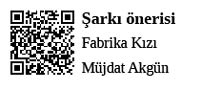

Bir odada yalnız başına oturuyorsun. Odanın nasıl bir binada olduğu, o an binanın kaçıncı katında olduğun, o binaya nasıl ve ne zaman geldiğin, ne zaman çıkacağın. Bu soruların hiçbirinin cevabına sahip değilsin, yalnızca bir odada, bir köşede oturuyorsun. Bu odada gördüğün her şey, sana bütünüyle yabancı, bir o kadar da tanıdık. Sanki hepsini daha önce görmüş gibisin, daha doğrusu benzerlerini ya da tıpkılarını diyelim. Buna déjà vu deniyor, evet... Daha önce gördüğümüze emin olduğumuz ama bunun nerede ve ne zaman olduğunu hatırlayamadığımız anların adıdır, déjà vu. Yavaşça yerinden kalktın, etraftaki tanıdık ama yabancı eşyaları süzmeye başladın. Zihnin açılıyor gibi. Uzun zamandır komada olan bir hastanın yeni uyandığı ilk saniyeler buna benzer olsa gerek, diye düşündün. Haklı olabilirsin, hem bunu kim bilebilir ki, komadan uyanan biri dışında?
Her gün geçtiğin yolları, gördüğün insanları, binaları, bindiğin asansörleri ve oturduğun masaları, karıştırdığın kahve fincanlarını, baktığın ekranları düşün. Bu hikâyedeki binaların ve eşyaların yerine onları koy. Tek eksik, hikâyenin sonunda yerinden kalkıp, etrafı başka bir gözle süzmeye başlaman. Halbuki gözlerin açık, her zaman gördüğün şeylere böyle deli gibi bakmanın ne anlamı var, değil mi? Farklı bir şey görmeyi mi bekliyorsun veya gördüklerine inanmamayı, onların gerçek olmadıklarını duymayı mı istiyorsun? Bunu sana ben söyleyemem. Tek soru şu: orada olmak istediğinden emin misin? Elindeki kitabın sonuna geldiğine göre, bu cevaplanması gereken bir soru artık.
Gözlerini kapatan bir insan düz yolda bile yürüyemez, derler. Deneylerle sabit bir tecrübedir, psikologlar böyle basit oyunları severler. Artık her gün yürüdüğün yolu değiştirmenin, gözlerini açmanın ve düz yolda bile yürümeyi unutmuş adımlarına yürüyebileceği yepyeni yolları öğretme vakti. Her gün gördüğün ve gerçekliğine kendini inandırdığın bu araftan kurtulmak için, ilk nefesini alan bir bebek gibi, boşluk sandığın bir alanın üzerine korkmadan adımını atmak zorundasın. Korkma ve asla unutma, hiç kimse ilk seferinde başaramaz...